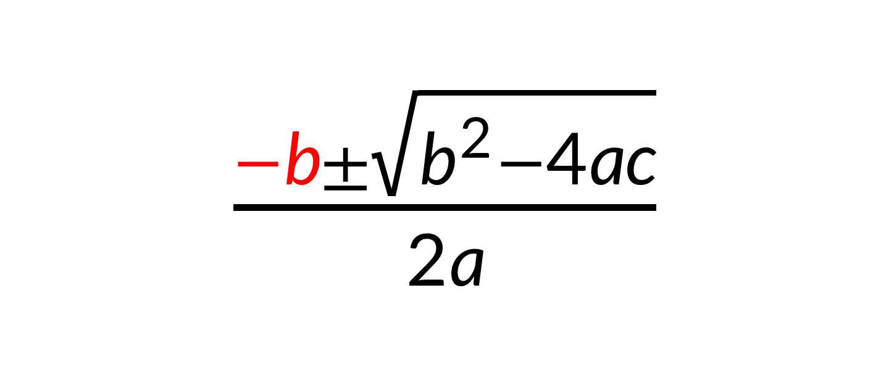
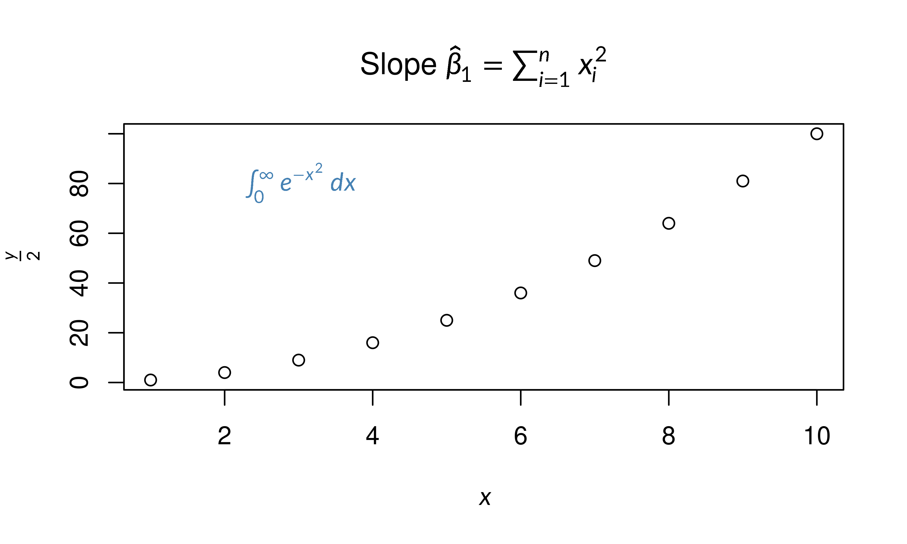
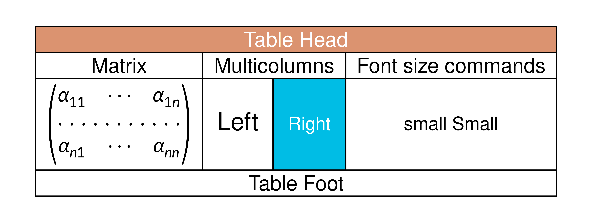
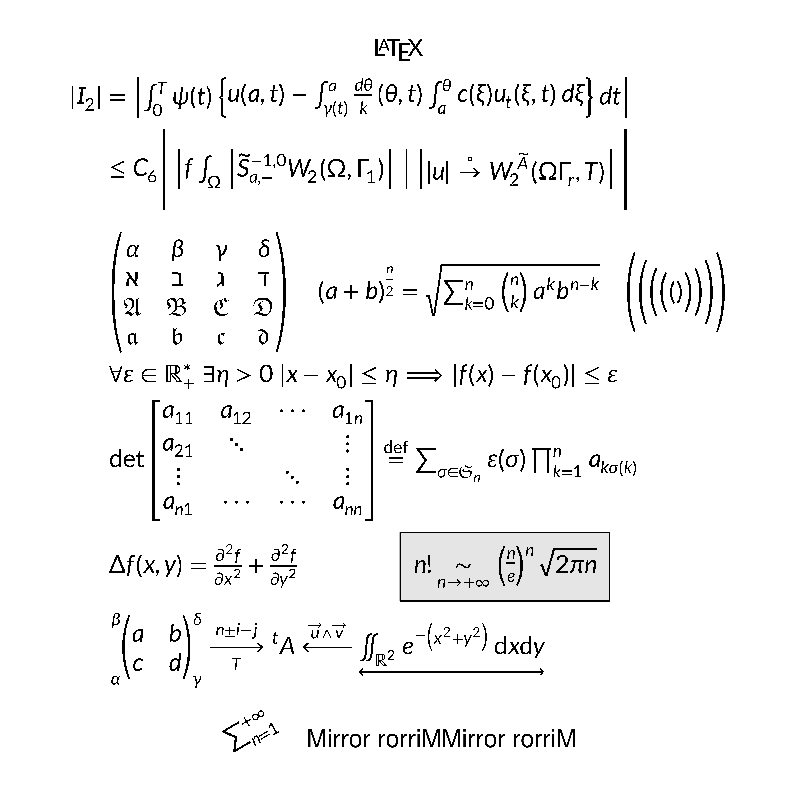
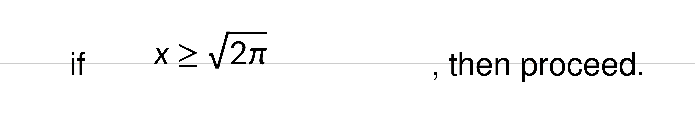
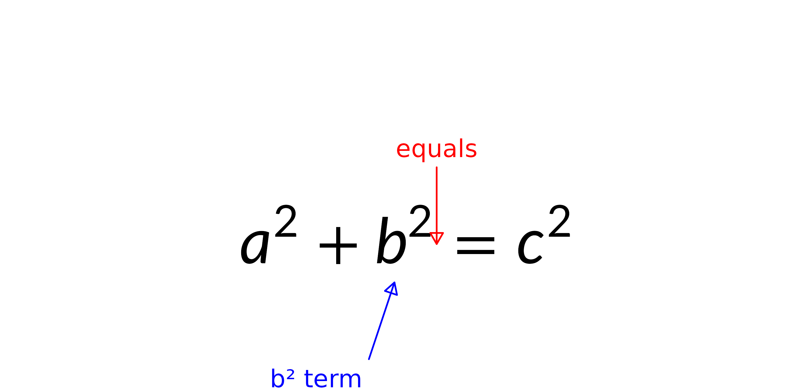
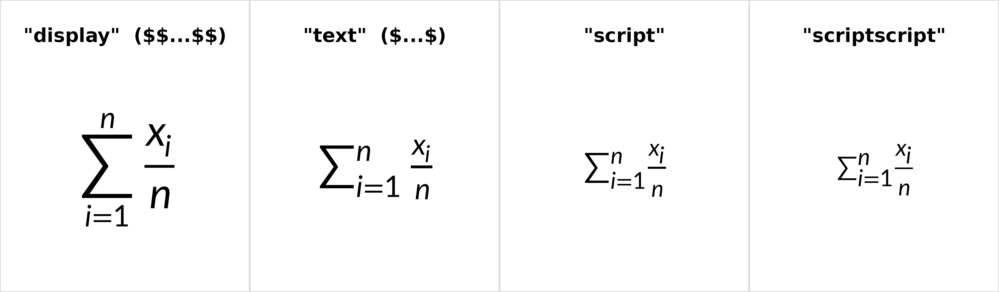
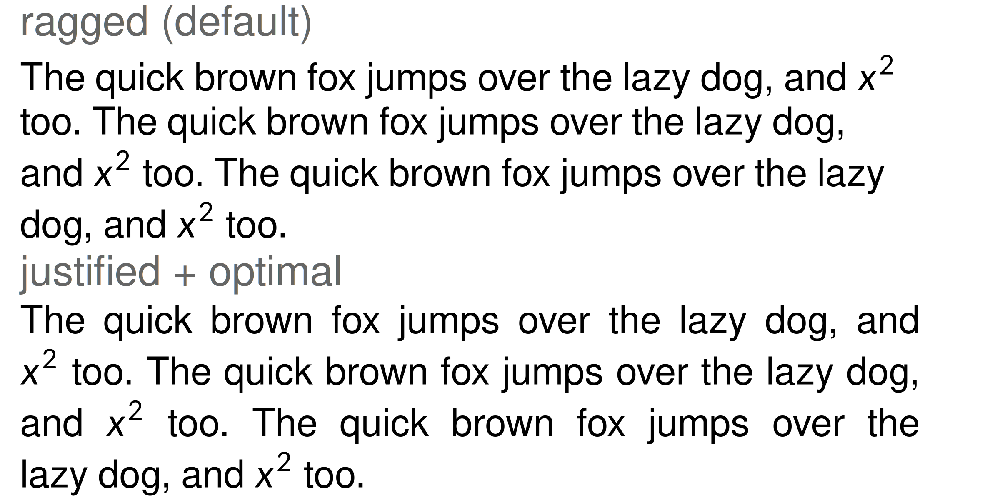

Quick start
grid.latex() draws LaTeX on the current page;
latex_grob() returns it as a grob.
library(gridmicrotex)
library(grid)
grid.newpage()
grid.latex(r"($\frac{\textcolor{red}{-b} \pm \sqrt{b^2 - 4ac}}{2a}$)")
Write LaTeX in a raw string, r"(...)", so backslashes
need no doubling.
Text and math
A string is read like a line of LaTeX text: math goes between
$...$ or \(...\), and a newline starts a new
line. With input_mode = "math" the whole string is math and
text goes in \text{}. These two are the same:
grid.newpage()
grid.latex(r"(Famous: $E = mc^2$)",
x = 0.05, y = 0.7, hjust = 0)
grid.latex(r"(\text{Famous: } E = mc^2)", input_mode = "math",
x = 0.05, y = 0.3, hjust = 0)input_mode = "document" reads a document body with
paragraphs, headings and displayed equations (see
vignette("documents")).
latex_options(input_mode = ) sets the default for the
session.
Mistakes do not stop the drawing. One warning lists each problem with its line and column, and an unknown command is drawn in red:
grid.newpage()
grid.latex(r"(Area $\pi r^2$, see \nosuchcommand{here})")
#> Warning: LaTeX input: 1:21: unknown command \nosuchcommand: drawn as its nameBase graphics
Set latex_options(device_math = TRUE) and write
$...$ in any base plot label:
latex_options(device_math = TRUE)
plot(1:10, (1:10)^2,
main = r"(Slope $\hat{\beta}_1 = \sum_{i=1}^{n} x_i^2$)",
xlab = r"($x$)", ylab = r"($\frac{y}{2}$)")
text(3, 80, r"($\int_0^\infty e^{-x^2}\,dx$)", col = "steelblue")
See vignette("base-graphics") for details.
Examples
A coloured array with \multicolumn,
\rowcolor, \cellcolor, a custom column type
and a nested matrix:
grid.newpage()
grid.latex(r"(
\newcolumntype{s}{>{\color{#1234B6}}c}
\begin{array}{|c|c|c|s|}
\hline
\rowcolor{Tan}\multicolumn{4}{|c|}{\textcolor{white}{\bold{\text{Table Head}}}}\\
\hline
\text{Matrix}&\multicolumn{2}{|c|}{\text{Multicolumns}}&\text{Font size commands}\\
\hline
\begin{pmatrix}
\alpha_{11}&\cdots&\alpha_{1n}\\
\hdotsfor{3}\\
\alpha_{n1}&\cdots&\alpha_{nn}
\end{pmatrix}
&\large \text{Left}&\cellcolor{#00bde5}\small \textcolor{white}{\text{\bold{Right}}}
&\small \text{small Small}\\
\hline
\multicolumn{4}{|c|}{\text{Table Foot}}\\
\hline
\end{array}
)")
Assorted notation: split alignment, fraktur, stacked
delimiters, \sideset, extensible arrows,
\rotatebox and \reflectbox:
grid.newpage()
grid.latex(r"(
\definecolor{gris}{gray}{0.9}
\definecolor{noir}{rgb}{0,0,0}
\fatalIfCmdConflict{false}
\newcommand{\pa}{\left|}
\begin{array}{c}
\LaTeX\\
\begin{split}
|I_2| &= \pa\int_0^T\psi(t)\left\{ u(a,t)-\int_{\gamma(t)}^a \frac{d\theta}{k} (\theta,t) \int_a^\theta c(\xi)
u_t (\xi,t)\,d\xi\right\}dt\right|\\
&\le C_6 \Bigg|\pa f \int_\Omega \pa\widetilde{S}^{-1,0}_{a,-}
W_2(\Omega, \Gamma_1)\right|\ \right|\left| |u|\overset{\circ}{\to} W_2^{\widetilde{A}}(\Omega\Gamma_r,T)\right|\Bigg|\\
&\\
&\begin{pmatrix}
\alpha&\beta&\gamma&\delta\\
\aleph&\beth&\gimel&\daleth\\
\mathfrak{A}&\mathfrak{B}&\mathfrak{C}&\mathfrak{D}\\
\boldsymbol{\mathfrak{a}}&\boldsymbol{\mathfrak{b}}&\boldsymbol{\mathfrak{c}}&\boldsymbol{\mathfrak{d}}
\end{pmatrix}
\quad{(a+b)}^{\frac{n}{2}}=\sqrt{\sum_{k=0}^n\tbinom{n}{k}a^kb^{n-k}}\quad
\Biggl(\biggl(\Bigl(\bigl(()\bigr)\Bigr)\biggr)\Biggr)\\
&\forall\varepsilon\in\mathbb{R}_+^*\ \exists\eta>0\ |x-x_0|\leq\eta\Longrightarrow|f(x)-f(x_0)|\leq\varepsilon\\
&\det
\begin{bmatrix}
a_{11}&a_{12}&\cdots&a_{1n}\\
a_{21}&\ddots&&\vdots\\
\vdots&&\ddots&\vdots\\
a_{n1}&\cdots&\cdots&a_{nn}
\end{bmatrix}
\overset{\mathrm{def}}{=}\sum_{\sigma\in\mathfrak{S}_n}\varepsilon(\sigma)\prod_{k=1}^n a_{k\sigma(k)}\\
&\Delta f(x,y)=\frac{\partial^2f}{\partial x^2}+\frac{\partial^2f}{\partial y^2}\qquad\qquad \fcolorbox{noir}{gris}
{n!\underset{n\rightarrow+\infty}{\sim} {\left(\frac{n}{e}\right)}^n\sqrt{2\pi n}}\\
&\sideset{_\alpha^\beta}{_\gamma^\delta}{
\begin{pmatrix}
a&b\\
c&d
\end{pmatrix}}
\xrightarrow[T]{n\pm i-j}\sideset{^t}{}A\xleftarrow{\overrightarrow{u}\wedge\overrightarrow{v}}
\underleftrightarrow{\iint_{\mathds{R}^2}e^{-\left(x^2+y^2\right)}\,\mathrm{d}x\mathrm{d}y}
\end{split}\\
\rotatebox{30}{\sum_{n=1}^{+\infty}}\quad\mbox{Mirror rorriM}\reflectbox{\mbox{Mirror rorriM}}
\end{array}
)", render_mode = "path")
Placing a formula
hjust and vjust take numbers or names.
vjust = "baseline" puts the formula’s baseline on
y, so it lines up with text beside it:
grid.newpage()
y <- 0.5
grid.segments(unit(0, "npc"), unit(y, "npc"),
unit(1, "npc"), unit(y, "npc"), gp = gpar(col = "grey80"))
grid.text("if ", x = 0.10, y = y, just = c(0, 0.5), gp = gpar(fontsize = 20))
grid.latex(r"($x \geq \sqrt{2\pi}$)",
x = 0.22, y = y, hjust = "left", vjust = "baseline",
gp = gpar(fontsize = 20))
grid.text(", then proceed.", x = 0.62, y = y, just = c(0, 0.5),
gp = gpar(fontsize = 20))
Named anchors
\mark{name} records a point inside a formula, and
grobMark() returns it as grid units, ready for an arrow or
a callout:
g <- latex_grob(r"($a^2 + b\mark{term}^2 \mark{equals}= c^2$)",
x = 0.5, y = 0.4)
grid.newpage()
grid.draw(g)
mk_eq <- grobMark(g, "equals")
grid.segments(mk_eq$x, mk_eq$y + unit(15, "mm"),
mk_eq$x, mk_eq$y + unit(3, "mm"),
arrow = arrow(length = unit(2, "mm"), type = "closed"),
gp = gpar(col = "red"))
grid.text("equals", x = mk_eq$x, y = mk_eq$y + unit(18, "mm"),
gp = gpar(col = "red"))
mk_bsq <- grobMark(g, "term")
grid.segments(mk_bsq$x - unit(6, "mm"), mk_bsq$y - unit(15, "mm"),
mk_bsq$x - unit(2, "mm"), mk_bsq$y - unit(3, "mm"),
arrow = arrow(length = unit(2, "mm"), type = "closed"),
gp = gpar(col = "blue"))
grid.text("b² term", x = mk_bsq$x - unit(7, "mm"),
y = mk_bsq$y - unit(18, "mm"), just = "right",
gp = gpar(col = "blue"))
Display and text style
$...$ sets a formula in text style, as in a paragraph;
$$...$$ sets it in display style, with limits above and
below. A label without delimiters is set in text style.
tex_style overrides this:
sum_expr <- r"(\sum_{i=1}^{n} \frac{x_i}{n})"
styles <- c("display", "text", "script", "scriptscript")
labels <- c('"display" ($$...$$)', '"text" ($...$)',
'"script"', '"scriptscript"')
grid.newpage()
for (i in seq_along(styles)) {
pushViewport(viewport(x = (i - 0.5) / 4, width = 1 / 4))
grid.text(labels[i], y = 0.88, gp = gpar(cex = 0.75, fontface = "bold"))
grid.latex(sum_expr, y = 0.42, input_mode = "math",
tex_style = styles[i], gp = gpar(fontsize = 20))
grid.rect(gp = gpar(col = "grey85", fill = NA))
popViewport()
}
All four use the same font size. To change the style of part of a
formula, use \displaystyle, \textstyle,
\scriptstyle or \scriptscriptstyle.
Line wrapping
max_width, in big points, wraps a label over several
lines. justify = TRUE fills every line but the last, and
line_break = "optimal" balances the breaks across the
paragraph:
prose <- paste(rep(
r"(The quick brown fox jumps over the lazy dog, and $x^2$ too.)", 3),
collapse = " ")
grid.newpage()
pushViewport(viewport(layout = grid.layout(2, 1)))
pushViewport(viewport(layout.pos.row = 1))
grid.text("ragged (default)", x = 0.02, y = 0.98, hjust = 0, vjust = 1,
gp = gpar(col = "grey40"))
grid.latex(prose, x = 0.02, y = 0.78, hjust = 0, vjust = 1,
max_width = 3.6 * 72, gp = gpar(fontsize = 11))
popViewport()
pushViewport(viewport(layout.pos.row = 2))
grid.text("justified + optimal", x = 0.02, y = 0.98, hjust = 0, vjust = 1,
gp = gpar(col = "grey40"))
grid.latex(prose, x = 0.02, y = 0.78, hjust = 0, vjust = 1,
max_width = 3.6 * 72, justify = TRUE, line_break = "optimal",
gp = gpar(fontsize = 11))
popViewport(2)
Words are not hyphenated. Mark where one may break with
\-, as in in\-ter\-na\-tion\-al.
Images
\includegraphics draws a PNG, JPEG or SVG file. Size it
with width, height or scale, and
rotate it with angle. The extension may be left off, and
\graphicspath{{figs/}} adds a folder to search.
fig <- tempfile(fileext = ".svg")
svglite::svglite(fig, width = 2, height = 1.2)
grid.newpage()
grid.circle(r = 0.35, gp = gpar(fill = "steelblue", col = NA))
dev.off()
#> png
#> 2
grid.newpage()
grid.latex(sprintf(r"(before \includegraphics[width=1in]{%s} after)", fig),
gp = gpar(fontsize = 20))An inline image sits on the baseline; \raisebox moves
it. A \caption is drawn where it is written. To centre a
figure and its caption, put them in a one-column array:
logo <- system.file("img", "Rlogo.png", package = "png")
grid.newpage()
grid.latex(sprintf(r"(\begin{array}{c}
\includegraphics[width=0.6in]{%s}\\
\caption{Figure 1: the R logo}
\end{array})", logo), gp = gpar(fontsize = 11))Prefer SVG, which stays sharp at any size. A PNG or JPEG warns when it is shown below 150 dpi. PDF and EPS files are not supported.
Fonts
Two math fonts are included:
| Alias | Font | Style | Pairs with |
|---|---|---|---|
"lete" (default) |
Lete Sans Math | Sans-serif | fontfamily = "sans" |
"stix" |
STIX Two Math | Serif | fontfamily = "serif" |
Choose one with math_font, or for the session with
latex_options(math_font = ). Text follows
gp$fontfamily:
formula <- r"(Theorem: $\int_0^1 f(x)\,dx \geq 0$)"
grid.newpage()
pushViewport(viewport(layout = grid.layout(2, 1)))
pushViewport(viewport(layout.pos.row = 1))
grid.latex(formula, gp = gpar(fontfamily = "sans"))
upViewport()
pushViewport(viewport(layout.pos.row = 2))
grid.latex(formula, math_font = "stix",
gp = gpar(fontfamily = "serif"))
upViewport(2)Any font R can use works for text, including CJK and right-to-left scripts:
grid.newpage()
grid.latex(r"(如果 $x > 0$ 则 $y = x^2$)",
gp = gpar(fontfamily = "sans"))\gmfontfamily{family}{text} sets the font of one run,
and \textrm{} returns to gp$fontfamily:
grid.newpage()
grid.latex(
r"(\textsf{sans \textrm{body} sans} \quad \gmfontfamily{mono}{mono})",
gp = gpar(fontfamily = "serif")
)load_math_font("MyFont.otf") adds any OpenType math
font. Text fonts need no loading. check_math_fonts() lists
what is available.
Devices
By default glyphs are drawn as text, so PDF and SVG output can be
selected and searched. This needs ragg,
svglite or cairo_pdf(); on other devices, such
as pdf(), glyphs are drawn as outlines with a warning.
render_mode = "path" always draws outlines: it works on
every device, but the text cannot be selected.
If the default device on Windows or macOS warns
font family not found, use ragg::agg_png()
instead.
showtext::showtext_auto() turns all text into outlines,
formulas included. Turn it off with
showtext::showtext_auto(FALSE).
Utilities
latex_dims() measures a formula:
latex_dims(r"(\frac{a}{b})", gp = gpar(fontsize = 20))
#> $width
#> [1] 7bigpts
#>
#> $height
#> [1] 25bigpts
#>
#> $depth
#> [1] 9bigpts
#>
#> $baseline
#> [1] 9.36317294836044bigpts
#>
#> $is_split
#> [1] FALSElatex_options() sets defaults for the session; arguments
given in a call always win:
latex_options(math_font = "stix")
latex_options() # show the current settings
reset_latex_options() # back to the defaultsdefine_macro() adds a shorthand for every later
label:
define_macro("RR", r"(\mathbb{R})")
define_macro("eps", r"(\varepsilon)")
grid.newpage()
grid.latex(r"($\forall \eps > 0, \eps \in \RR$)")A label can also define its own, with \newcommand or
\def. These last for that label only:
grid.newpage()
grid.latex(
r"(\def\norm#1{\left\lVert #1 \right\rVert}
$\norm{\vec{v}} = \sqrt{\langle \vec{v}, \vec{v} \rangle}$)"
)debug = TRUE draws the bounding box and baseline:
grid.newpage()
grid.latex(r"($x^{2} + y_{i}$)", debug = TRUE)Pasting LaTeX
Tables from knitr::kable(format = "latex") or
xtable can be pasted unchanged:
snippet <- r"(
% latex table generated by kable()
\begin{table}[ht]
\centering
\caption{Model coefficients}
\begin{tabular}{lrr}
\toprule
Term & Estimate & \emph{p} \\
\midrule
Intercept & 2.14 & 0.003 \\
Slope & 0.42 & 0.001 \\
\bottomrule
\end{tabular}
\end{table}
)"
grid.newpage()
grid.latex(snippet, gp = gpar(fontsize = 11))Not supported
- Pages, and numbering across a document:
\refdraws??,\citedraws[?], and equations are not numbered. - Automatic hyphenation, TikZ, theorem environments,
\verb, small caps and thedescriptionlist. -
\bfseries,\itshapeand similar switches. Use\textbf{},\textit{}, or\bfand\it. -
\usepackageloads nothing; every supported command is built in. - A formula between two right-to-left words is not reordered.